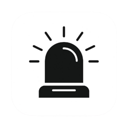
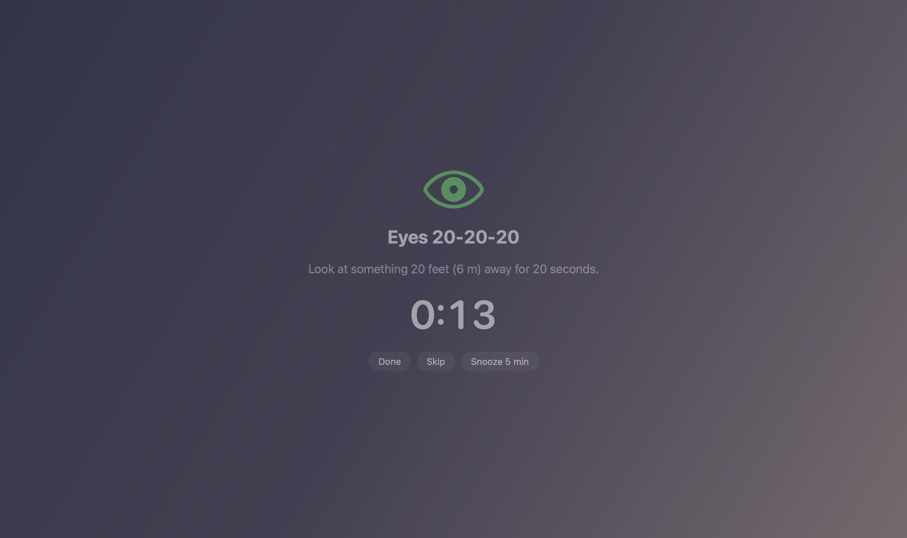
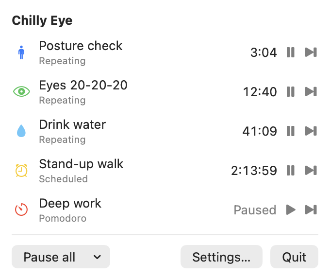
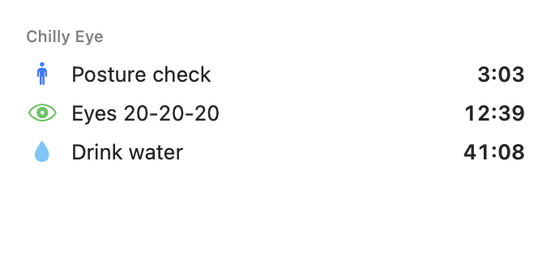
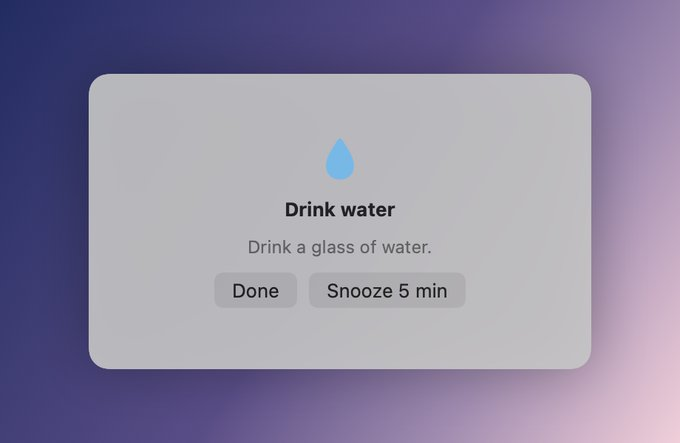
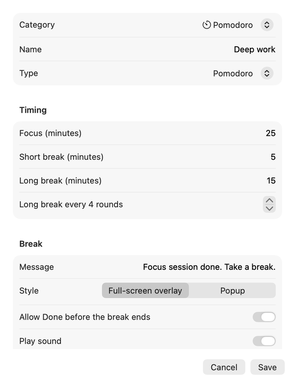
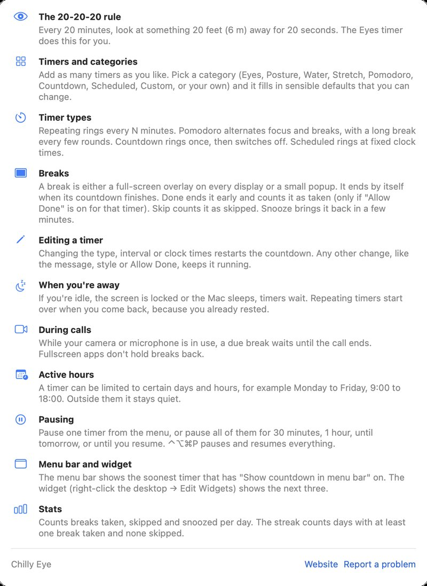

Chilly Eye
Rest your eyes, fix your posture, drink your water. A native macOS menu bar app for break reminders, built around the 20-20-20 rule.
Download for macOS View on GitHub

Rest your eyes, fix your posture, drink your water. A native macOS menu bar app for break reminders, built around the 20-20-20 rule.
Download for macOS View on GitHub
The 20-20-20 rule: every 20 minutes, look at something 20 feet (6 m) away for 20 seconds. Chilly Eye reminds you, and lets you add as many other timers as you like: posture, water, stretch, pomodoro, countdowns or breaks at fixed clock times.
It started in 2025 as a small Python and Tkinter popup. In 2026 I rewrote it from scratch as a native SwiftUI menu bar app, with a desktop widget and signed, notarized releases.

The full-screen break overlay, with Done, Skip and Snooze.
Grouped by category: eyes, posture, water, stretch, pomodoro, countdown, scheduled or your own. Pick one and it fills in sensible defaults.
A blurred full-screen overlay on every display, or a small popup. End early with Done, Skip, or Snooze, and make a break strict by turning Done off.
Timers hold while you're idle, locked or asleep, and breaks wait while you're in a call (camera or mic in use).
Run each timer only when you need it, for example Monday to Friday, 9:00 to 18:00.
Breaks taken, skipped and snoozed per day, and a day streak to keep you honest.
For 30 minutes, an hour, until tomorrow or until you resume, with the global shortcut ⌃⌥⌘P.

Every timer in the menu bar, soonest first.

The next 3 timers as a desktop widget.

A small popup instead of the full-screen overlay.

Pick a category and it fills in the defaults.

A built-in guide explains everything inside the app.
You need a Mac with Apple Silicon (M1 or later) and macOS 14 Sonoma or later.
ChillyEye-x.y.z.dmg from GitHub Releases.